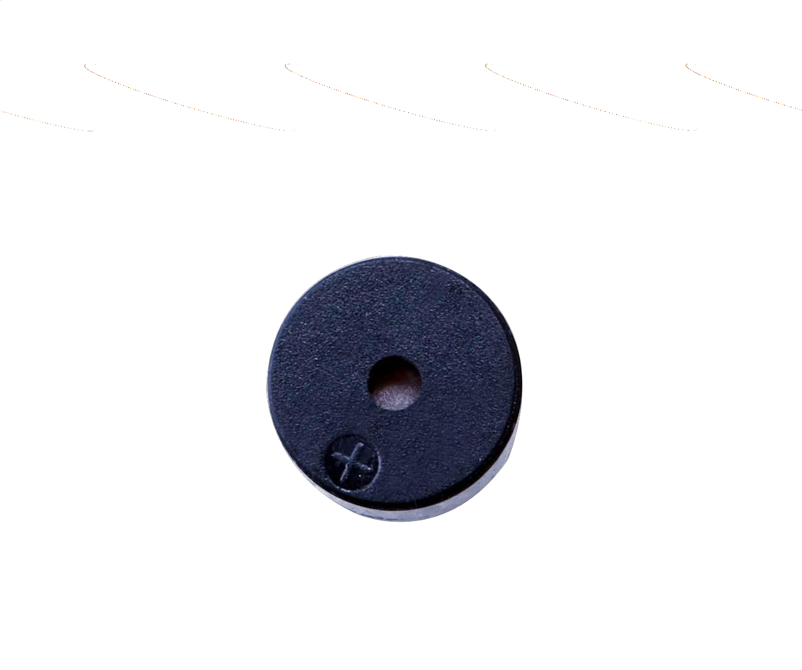
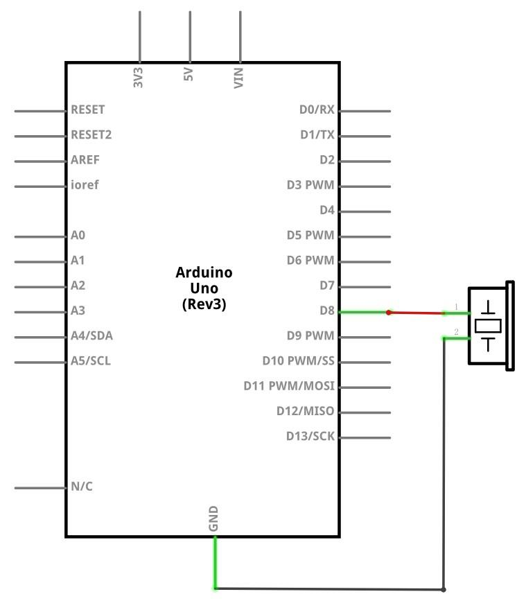
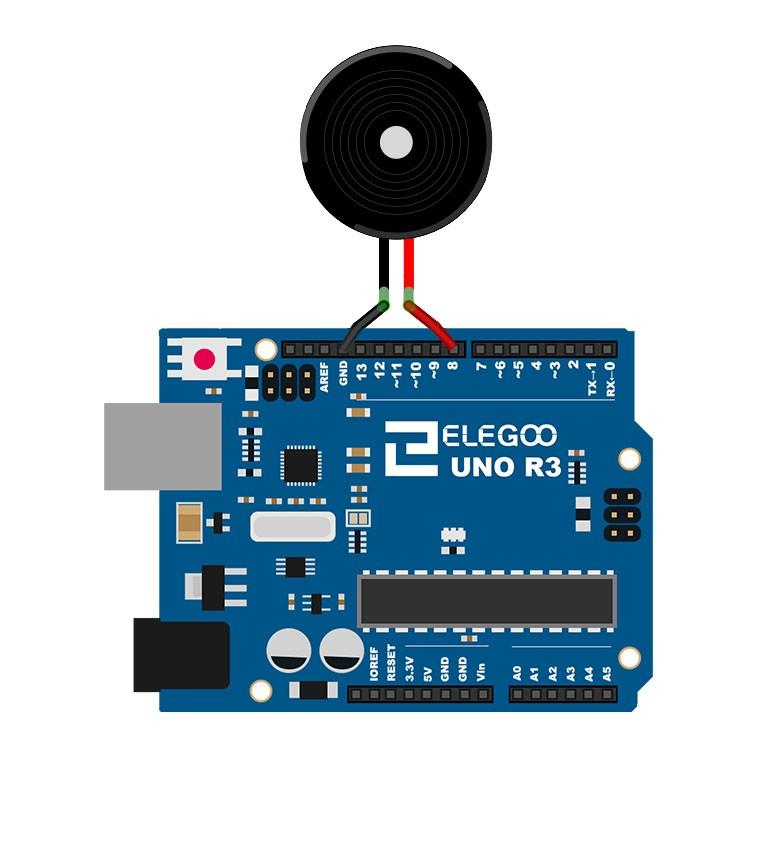
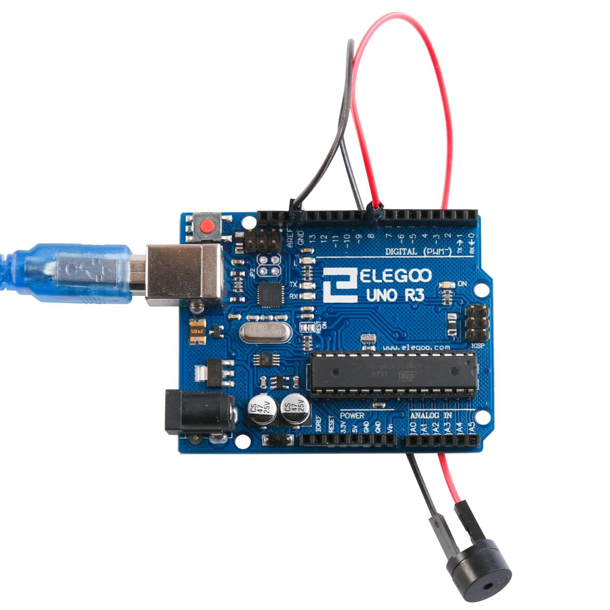

En esta lección, aprenderemos a cómo utilizar una señal acústica pasiva. El propósito del experimento es generar ocho sonidos con una duración de 0,5 segundos cada uno: de Alto Do (523 Hz), Re (587 Hz), Mi (659 Hz), Fa (698 Hz), tan (784 Hz), La (880 Hz), Si (988 Hz) hacer agudos (1047 Hz).
(1) x Elegoo Uno R3
(1) x Zumbador pasivo
(2) x F M cables (cables de hembra a macho)
El principio de funcionamiento del zumbador pasivo se basa en utilizar la modulación por ancho de pulso
(PWM) para generar audio. Debido al cambio en la frecuencia de vibración, se pueden generar diferentes sonidos.
Por ejemplo, enviando un pulso de 523Hz, se puede generar un sonido alto y con un pulso de 587Hz, puede generar un sonido de
rango medio.
Debemos tener cuidado de no utilizar la función analogWrite( ) con el
Kit UNO R3 para generar un pulso de sonido, ya que la salida de pulso de analógico
(de escritura) se fija (500 Hz).



El cableado del zumbador conectado a la placa UNO R3 será: rojo (positivo) al pin 8 y el cable negro (negativo) a la tierra.
Una vez efectuado todo el cableado, buscaremos el script con el ejemplo en la carpeta habitual.
Si tenemos todo el cableado bien, deberíamos tener algo como en la imagen, de no ser asi debemos revisar los apartados anteriores.

Volver al índice